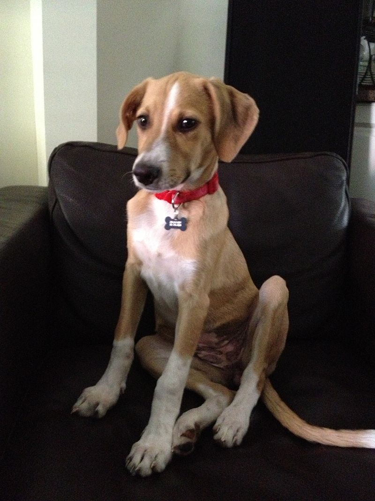

The potcake dog is a mixed-breed dog type found on several Caribbean islands. Its name comes from the congealed rice and pea mixture that local residents traditionally fed dogs. Although appearance varies, potcake dogs generally have smooth coats, cocked ears, and long faces.
Dogs on various Caribbean islands share a common ancestry; many residents of Turks and Caicos were originally from nearby islands and took their dogs with them. Three types may have contributed to development: dogs the Arawak brought with them to the Bahamas; terriers protecting supplies from rodents on ships that arrived in Eleuthera, New Providence, and the Abaco Islands; and dogs from North Carolina that arrived with Loyalists during the American Revolutionary War period. It is also likely that the early Spanish settlers may have introduced their own dogs. As these could have included fighting dogs, the Arawak dogs may have been killed off. In addition, many breeds were imported in the 20th century which interbred with the local dogs, so making the mix of breeds in the potcake dynamic. DNA studies have shown no residue of early dog DNA in today's potcakes. Any such remaining DNA has become inconsequential due to the constant imports of dogs with the arrival of colonizers.
The type's name is derived from the term "potcake", which refers to the congealed rice mixture at the bottom of the family cooking pot that Bahamians have traditionally fed dogs. In Nassau alone, there are an estimated 5,000 to 8,000 stray potcakes. In the late 1970s, The Bahamas named the type the "Royal Bahamian Potcake". As of February 2011, the Bahamas Kennel Club lists it separately from the mixed-breed dog within Group 9 – Non-Registered. Courtesy of Wikipedia.